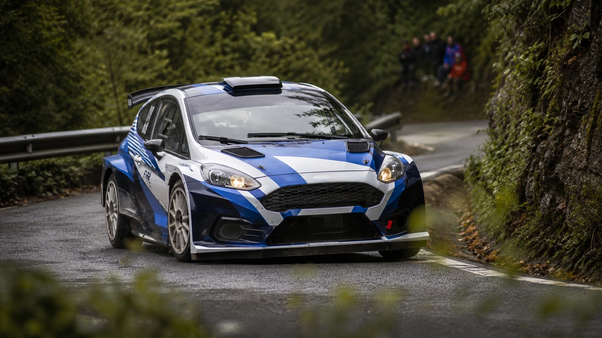
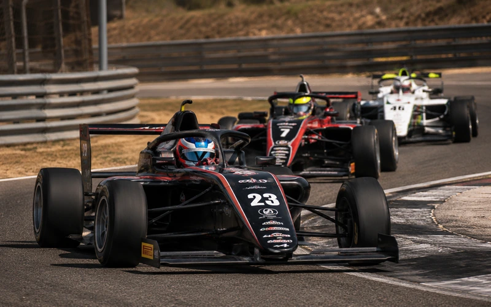
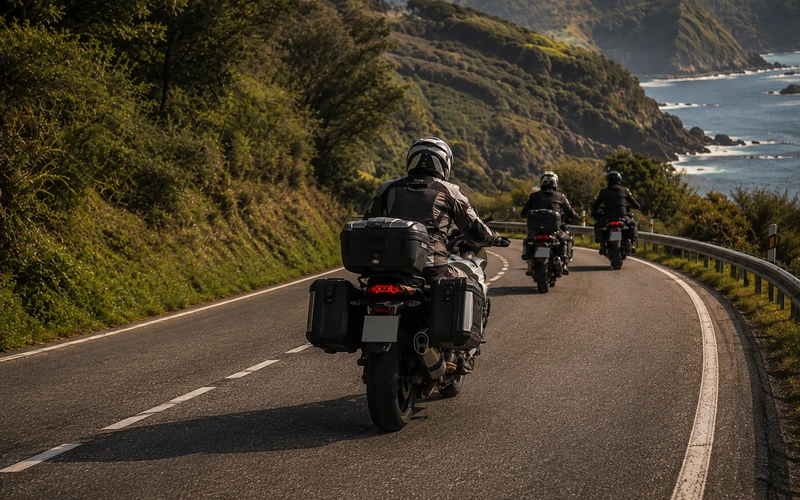
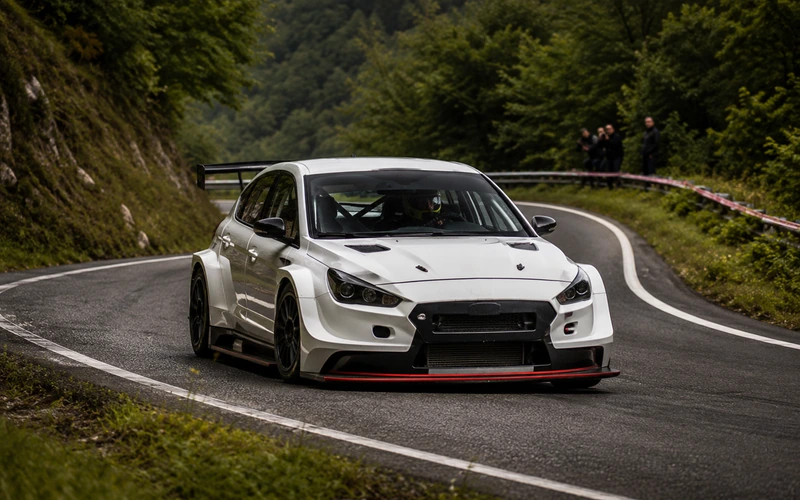
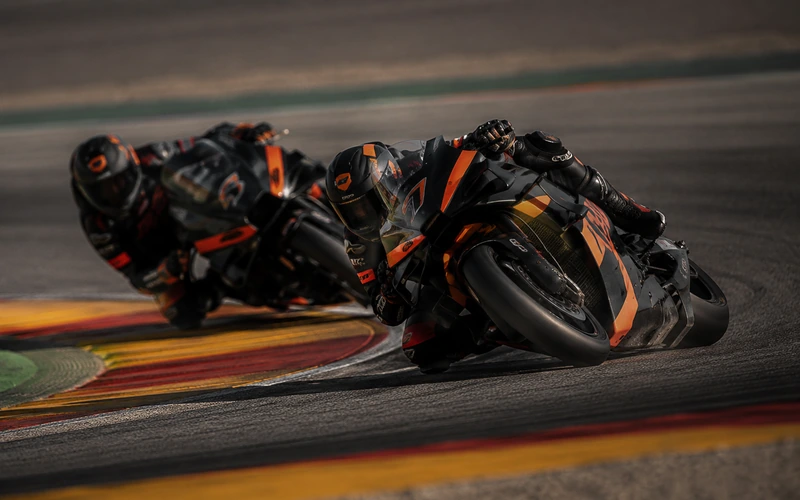
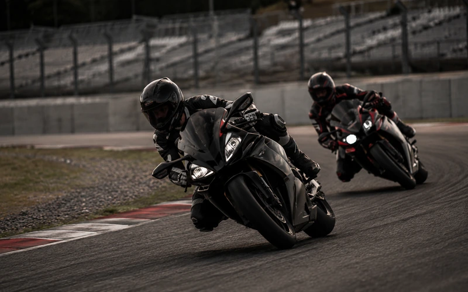

|
La selección de esta semana
Ferrol, Jarama y lo que viene este fin de semana
Este fin de semana hay bastante donde elegir. Nos quedamos con cuatro citas para estos días y una más que conviene tener ya en el radar.
|
|

Evento destacado · Rally
57 Rallye de Ferrol
21–22 agosto · Ferrol, A Coruña
El rally gallego concentra su competición entre el viernes y el sábado, con salida el viernes por la tarde y jornada decisiva el sábado.
Es la cita que abre nuestra selección de esta semana: está aquí ya y merece tenerla localizada antes de que empiece.
Ver Rallye de Ferrol
|
Más planes para este fin de semana
|

|
Circuito · Monoplazas
F4 Spain · Jarama
22–23 agosto · Circuito de Madrid Jarama-RACE
La Fórmula 4 española llega este fin de semana a Jarama. Dos días de monoplazas en uno de los circuitos con más historia del país.
Ver F4 Spain en Jarama →
|
|
|

|
Ruta · Moto
Sun To Sun Asturias
22 agosto · Gijón, Asturias
Una propuesta distinta a la competición: rutas de 300, 500 y 1.000 kilómetros con salida desde Gijón.
Las inscripciones permanecen abiertas hasta el viernes, así que todavía llega a tiempo para quien busque plan sobre dos ruedas para este sábado.
Ver Sun To Sun Asturias →
|
|
|

|
Montaña
Subida a la Bien Aparecida
21–22 agosto · Ampuero, Cantabria
La montaña también tiene sitio este fin de semana. La Subida a la Bien Aparecida concentra actividad desde el viernes y competición el sábado en Ampuero.
Una alternativa para quienes prefieren las carreras contra el crono y las carreteras de montaña.
Ver la Subida a la Bien Aparecida →
|
|
|

|
Reserva fecha
MotoGP Aragón
28–30 agosto · MotorLand Aragón, Alcañiz
No es para este fin de semana, pero sí para empezar a organizar el siguiente.
MotoGP vuelve a MotorLand del 28 al 30 de agosto, una de las grandes citas que ya asoman en la agenda.
Ver MotoGP Aragón →
|
|
|
|
Lo próximo cerca de ti
|

|
Motor Extremo Montmeló
22–23 agosto · Circuit de Barcelona-Catalunya
Si estás en Barcelona, este fin de semana también hay actividad en Montmeló con las jornadas de Motor Extremo en el Circuit.
Ver Motor Extremo Montmeló →
|
|
¿Todavía no tienes plan?
Consulta la agenda completa y encuentra eventos por fecha, disciplina o zona.
Ver todos los eventos
|
|
|